77 Classic champions
Browse Classic champion portraits, localized names, attributes, and P/Q/W/E/R skills.
THE CLASSIC ARCHIVE Android app · PC browser beta
Riot Games official reference link · League of LegendsAndroid beta · PC browser beta · 26.20.1
LoL Encyclopedia Classic — Unofficial Archive is an independently developed historical reference for Classic champions, items, masteries, summoner spells, and runes. Explore the Android development build and its PC browser beta preview.


26.20.1 · Available on Google Play
The 26.20.1 release uses Riot's Classic 16.20.1 data, with 77 Classic champions and Korean, Japanese, and English screens. Aatrox, Caitlyn, Irelia, Karma, and Quinn have their own Classic entries. Suggested mastery trees keep their original positions, and linked skill effects open a brief explanation. The 26.20.1 release is available on Google Play in eight targeted countries and regions: Korea, Japan, the United States, the United Kingdom, Canada, Australia, New Zealand, and Ireland. Store propagation can take time. The 26.19.5 captures below preserve their original version and date.
26.20.1 출시 버전에는 Riot 클래식 16.20.1 자료의 챔피언 77명과 한국어·일본어·영어 화면이 포함됩니다. 아트록스·케이틀린·이렐리아·카르마·퀸은 별도 클래식 항목으로 구분합니다. 추천 특성은 원래 위치를 유지하며, 스킬 효과 용어를 누르면 짧은 설명을 확인할 수 있습니다. 26.20.1은 대한민국, 일본, 미국, 영국, 캐나다, 오스트레일리아, 뉴질랜드, 아일랜드의 8개 대상 국가/지역에서 Google Play를 통해 제공됩니다. 스토어 전파에는 시간이 더 걸릴 수 있습니다. 아래 26.19.5 촬영물은 당시 버전과 날짜를 유지합니다.
26.20.1リリースには、Riotのクラシック16.20.1データの77体のチャンピオンと韓国語・日本語・英語の画面が含まれています。エイトロックス、ケイトリン、イレリア、カルマ、クインは、それぞれ専用のクラシック項目として表示します。おすすめマスタリーは元の配置を保ち、スキルの効果用語をタップすると短い説明を確認できます。26.20.1は韓国、日本、米国、英国、カナダ、オーストラリア、ニュージーランド、アイルランドの8つの対象国・地域でGoogle Playから提供されています。ストアへの反映には時間がかかる場合があります。以下の26.19.5の画像は、元のバージョンと撮影日を保持しています。
26.20 beta · Reference data
26.20.1 · Browser beta preview
The PC Beta uses the app's current encyclopedia interface to browse 77 champions, shop-listed items, masteries, spells, runes, and 26.20 news. Champion details include editorial suggested builds and explanations of linked skill effects. Suggested builds include two role-based summoner spells and a compact Offense, Defense, and Utility overview. The three trees retain their original six-row, four-column positions; tap an icon to read its name and points. Cataloged voice lines play locally where available, with their language labels. Settings and saved reference choices stay in the browser.
Community and online video are not connected in this browser preview; the Android app handles the online community.
26.20 beta
The app includes searchable champion, item, rune, and terminology references. Posts, comments, recommendations, reporting, blocking, and bug reports are handled by an HTTPS online service.
Browse Classic champion portraits, localized names, attributes, and P/Q/W/E/R skills.
Explore prices, component items, connected build paths, and familiar Korean item nicknames.
Review 56 masteries and 16 classic summoner spells. Suggested builds show Offense, Defense, and Utility together in a compact overview, preserving each tree's original grid positions.
Choose from 53 Classic runes, including 17 quintessences, and arrange a complete 30-slot rune page.
The online community requires age 18+ confirmation and acceptance of its terms before use. It supports posts, comments, recommendations, reports, and blocks.
Choose Korean, Japanese, or English for the interface and reference descriptions. The voice language has a separate setting and source labels.
Each of the 77 champions has an editorial example of items, runes, masteries, two summoner spells, and skill order. These are reference suggestions, not measured pick rates or win rates.
Tap linked ability terms to read brief explanations in the selected app language.
In the 26.20 beta
The app includes the Classic portion of patch 26.20 in Korean, Japanese, and English. New Classic champions and balance changes have separate archive entries. Open the original Riot patch notes for the complete update.
Data boundary
App settings, masteries, builds, and rune pages remain on the device. Community requests use LOLFLIX over HTTPS. Optional post translation has been tested in the 26.20 development app's Canary environment. It is not yet available in the production app. When enabled and requested, LOLFLIX's Cloudflare Worker sends stored post titles, bodies, and target language to Google Gemini API using a billing-linked project. Canary has request-count limits, but these do not guarantee zero cost. Privacy details
26.20.1 beta · Physical phone captures · October 7, 2026
These six scenes were captured from the 26.20.1 beta on a physical Android phone. Choose a site language to view its original screenshots. Each image preserves the complete app WebView, with the phone's system bars outside the crop.
26.20.1 beta · Physical phone captures · October 7, 2026
Open an image to view its exact phone capture. Suggested builds are editorial examples. Archived pick recordings are available for 5 Korean, 4 Japanese, and 5 English entries; Karma's Japanese original recording remains unavailable. Historical background text is an editorial summary and translation.
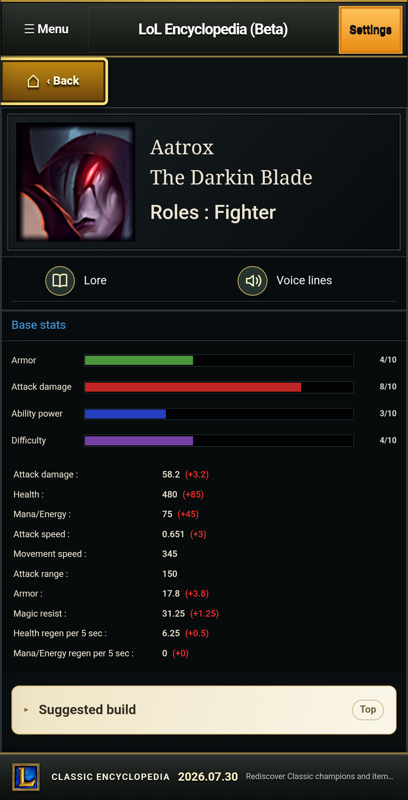
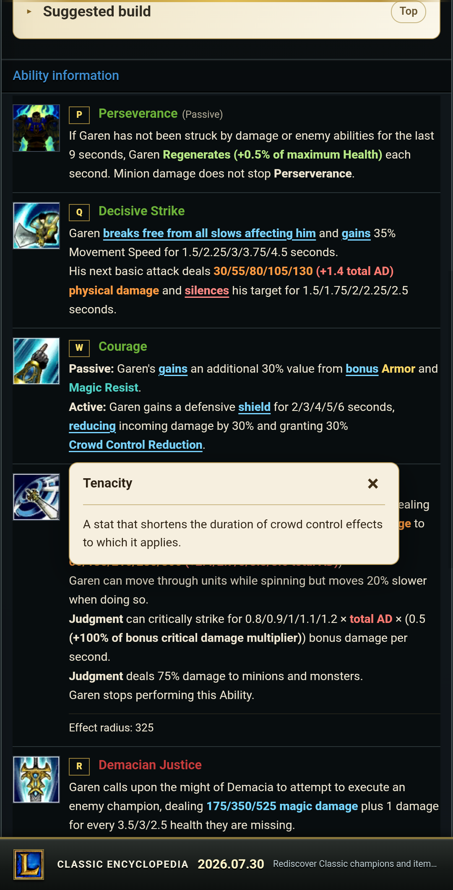
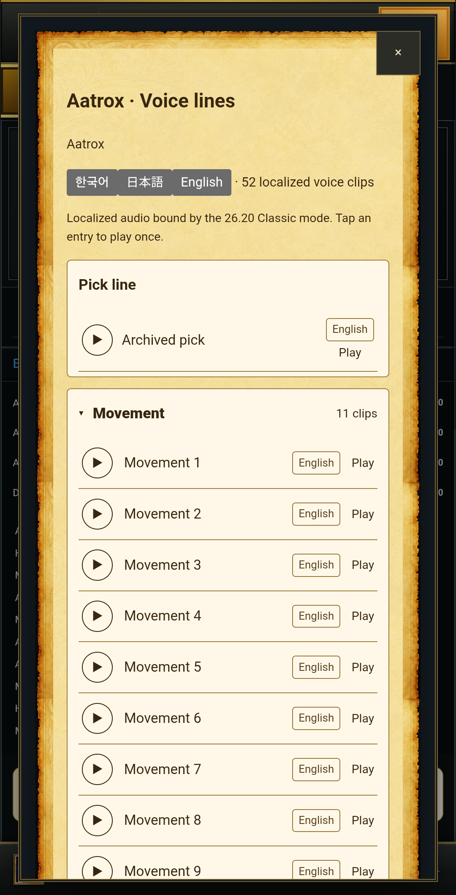
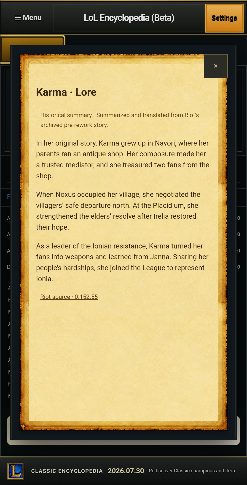
These earlier images and their recording retain the version and date of the original 26.20 beta snapshot.
26.20 beta · English phone capture · October 7, 2026
These screens and the silent feature tour were captured from the 26.20 beta on a physical Android phone. They show the home screen, Classic Aatrox, Garen's suggested mastery trees, and a linked skill-effect explanation. The complete app area is retained; the phone's system bars are outside this WebView view.
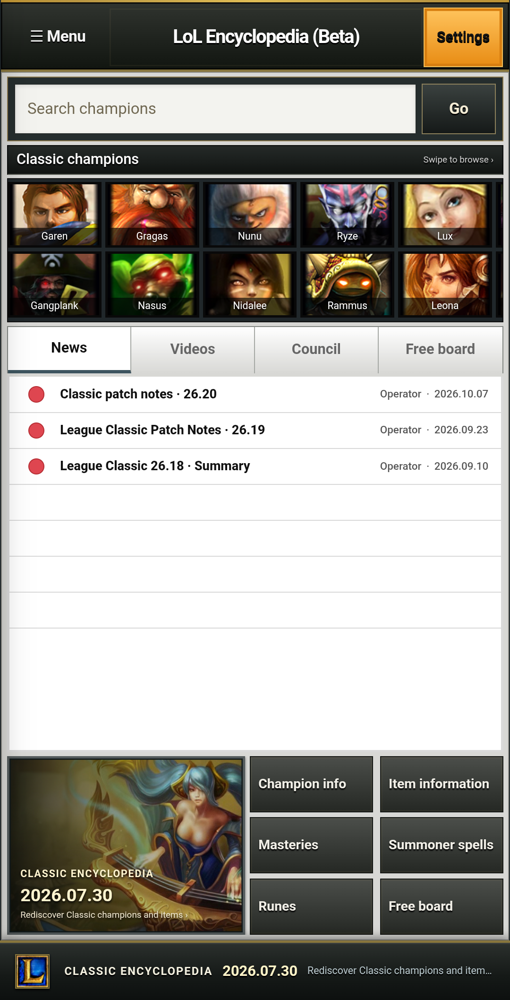
26.20 beta · English · Physical Android phone
Open a screenshot to see the full app view. Choose Korean, Japanese, or English in the app's language settings. Suggested builds are editorial reference examples rather than measured win-rate statistics.

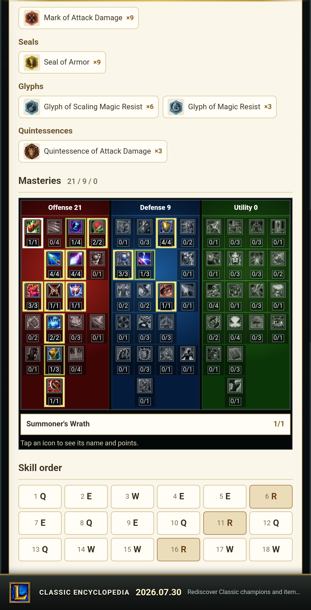
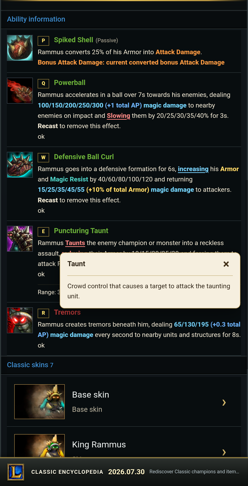
These earlier images and their recording retain the version and date of the original development snapshot.
26.19.5 English phone capture · September 30, 2026
The four screenshots and silent champion-list recording were captured directly from the 26.19.5 development app on a physical Android phone on September 30, 2026. They show that development snapshot's archive pages; later interface changes can be explored in the PC Beta.
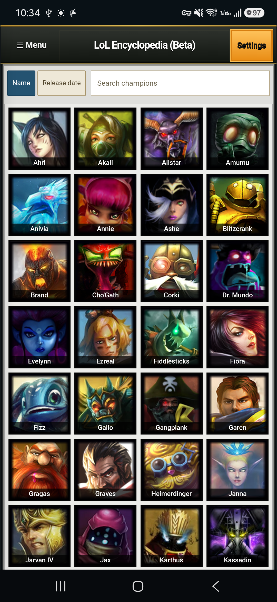
26.19.5 development snapshot · English · September 30, 2026
These four screenshots were captured from the 26.19.5 Android development app on a physical phone on September 30, 2026. They preserve that development snapshot; the current PC Beta includes later interface updates.
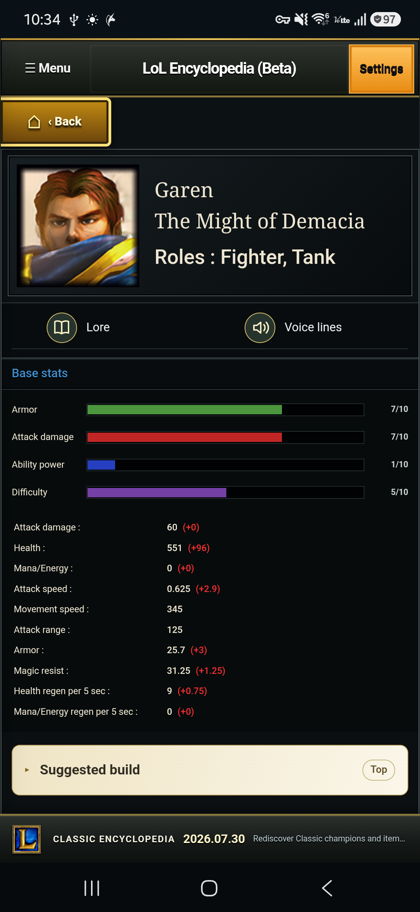
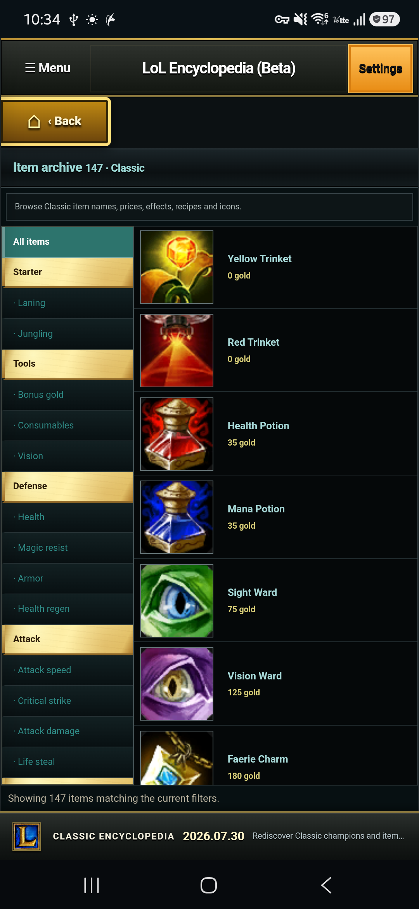
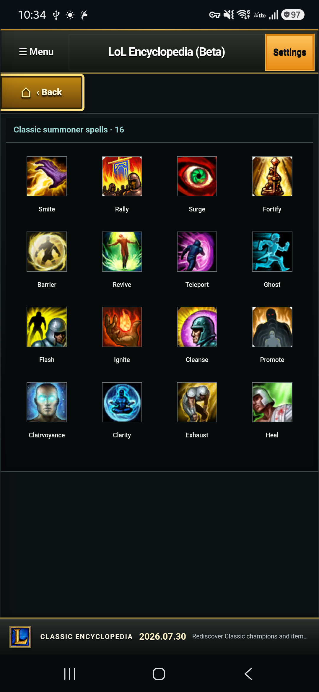
Google Play release
Google Play listing · Version 26.20.1 is available on Google Play in eight targeted countries and regions: Korea, Japan, the United States, the United Kingdom, Canada, Australia, New Zealand, and Ireland. Store propagation can take time. Store availability does not establish Riot Games approval or distribution authorization.
com.lolclassic.encyclopedia Availability on Google Play does not imply endorsement by Riot Games or approval of a Riot Production API application.
Riot API status
Limited in-app current-player lookup remains disabled until LoL Encyclopedia Classic (Application 861480) receives the applicable Riot Production approval. For expanded current-player statistics and match history, the Android app may open Rift Archive (Application 868824), a separately registered product. Each product will use only its own Production API key and server-side backend if approved.
Project identity
LoL Encyclopedia Classic — Unofficial Archive is free, independently developed, and not affiliated with or endorsed by Riot Games. “Classic” describes the historical archive theme; it does not claim to be an official League of Legends Classic product.
Product, privacy, and rights support